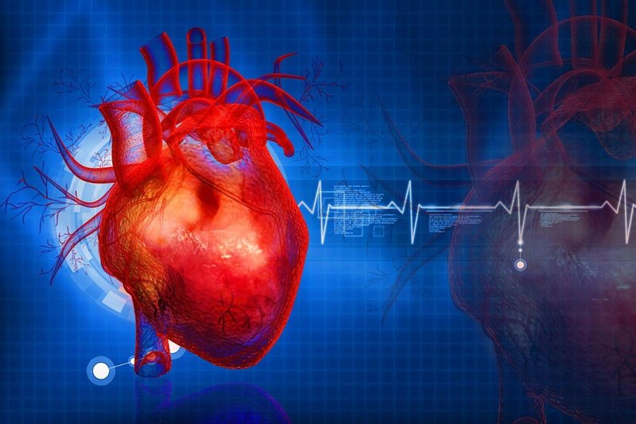

Вот его описание: Следует знать, что современное МРТ не является вредным или опасным для здоровья пациентов. Оно не оказывает негативного воздействия на организм, если его проводить без отсутствия явных противопоказаний. Вследствие этого такое исследование можно выполнять детям и даже женщинам в период беременности (при разрешении врача). Вотличие от КТ, описание МРТ мозга является более информативным. Оно позволяет выявить инфекционные процессы, инсульт, отек и прочие патологии наиболее детально. При разумном описании врача можно диагностировать патологию даже на начальных этапах ее протекания. Описание МРТ мозга включает в себя рассмотрение следующих критериев:
- общая структура мозга;
- размер боковых желудочков;
- положение и размер зрительных яблок;
- состояние гипофиза;
- размер и положение слухового прохода.
Искусственный интеллект точнее врачей определяет риск развития инсульта и инфаркта у пациентов, выяснили исследователи. По их рассчетам, активное внедрение систем ИИ в медицину должно произойти уже в следующие пть лет. Во многих экспкриментах системы исскуственного интелекта показывают многообещающие результаты в диагностике и прогнозе исхода заболеваний на основе анализа изображений.
Выявлена причина трети смертей в мире. 
Международный коллектив медиков (2,3 тысячи экспертов из 133 стран) рассчитал, что примерно треть всех смертей в мире происходит из-за сердечно-сосудистых заболеваний.